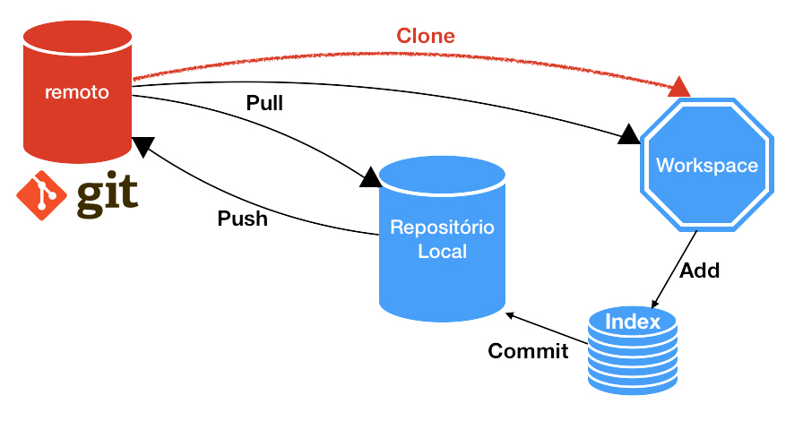

Controle de versão
Há muitos anos, antes do controle de versão, desenvolvedores tinham que criar cópias de seus projetos manualmente para manter um histórico de alterações. Isso era um processo tedioso e propenso a erros. Com o tempo, surgiram ferramentas de controle de versão que permitiam aos desenvolvedores rastrear e gerenciar alterações em seus projetos de forma mais eficiente. Hoje em dia, o controle de versão é uma prática comum e essencial para o desenvolvimento de software em equipe. Ele permite que os desenvolvedores trabalhem juntos em um projeto, mantendo um histórico completo de todas as alterações feitas ao longo do tempo.
História do GIT

O Git foi criado por Linus Torvalds em 2005, enquanto trabalhava no desenvolvimento do kernel do Linux. Ele estava insatisfeito com as ferramentas de controle de versão disponíveis na época e decidiu criar sua própria solução. O objetivo era criar um sistema de controle de versão distribuído, rápido e eficiente, que pudesse lidar com projetos grandes e pequenos. O processo de criação do Git foi bastante iterativo. Torvalds começou criando um conjunto de scripts para gerenciar as versões do kernel do Linux. Ele então decidiu reescrever esses scripts em C, criando uma ferramenta mais robusta e flexível. O Git foi lançado oficialmente em 2005 e rapidamente se tornou popular entre os desenvolvedores de software. Uma das principais vantagens do Git é sua arquitetura distribuída. Isso significa que cada desenvolvedor tem uma cópia completa do repositório em seu próprio computador, o que torna o processo de colaboração mais fácil e eficiente. Além disso, o Git é conhecido por sua velocidade e eficiência, tornando-o uma escolha popular para projetos de todos os tamanhos. Hoje em dia, o Git é amplamente utilizado em todo o mundo e é considerado uma das ferramentas de controle de versão mais populares e poderosas disponíveis para desenvolvedores de software.
Definição do GIT
O Git é um sistema de controle de versão distribuído gratuito e de código aberto projetado para lidar com tudo, desde projetos pequenos a muito grandes com velocidade e eficiência. Ele permite que os desenvolvedores trabalhem juntos em um projeto, mantendo um histórico completo de todas as alterações feitas ao longo do tempo. O Git é fácil de aprender e tem uma pegada pequena com desempenho extremamente rápido. Ele supera as ferramentas SCM como Subversion, CVS, Perforce e ClearCase com sua arquitetura distribuída, que significa que cada desenvolvedor tem uma cópia completa do repositório em seu próprio computador, tornando o processo de colaboração mais fácil e eficiente. O Git é amplamente utilizado em todo o mundo e é considerado uma das ferramentas de controle de versão mais populares e poderosas disponíveis para desenvolvedores de software.

Comandos Básicos
O Git possui uma serie de comandos básicos, vamos fazer um passo a passo desde iniciar um projeto até fazer um commit no github, lembrando que para os usuários de Windows é necessário o download do git, no Linux ele já vem nativamente.
- Iniciando um projeto: Navegue até o diretório em que você vai iniciar seu projeto e digite o segundo comando:
git init
Com isso o repósitório é iniciado, e uma pasta .git é criada no diretório, contendo os arquivos necessários para o repositório, mas nenhum arquivo é monitorado ainda.
- Monitorando arquivos: Se você quer monitorar os arquivos, precisa adicioná-los a área de prepraração (Staging area), em que podemos fazer de duas formas: adicionado arquivo por arquivo, ou adicionando todos os arquivos modificados, que é mais conveniente:
sgit add NOME_DO_ARQUIVO
git add .
- Commit: Fazendo um commit, todos os arquivos que foram adicionados na área de preparação serão consolidadas (Commited) sendo salvas no repositório, o comando é o seguinte:
git commit -m "Descrição do que foi feito nesse commit"
- Clone: Caso o repositório em que você queira trabalhar já exista, você pode realizar um clone, que traz todos os arquivos desse repositório para sua maquina em seu diretório:
git clone https://github.com/Conta_Exemplo/Repositorio_Exemplo.git
- Status: Para ver o status dos arquivos, se foram adicionados ou não monitorados basta o seguinte comando:
git status
- Log: Este comando mostra todos os commits anteriores, ou seja o histórico, com informações como autor do commit, data, id entre outros:
git log
- Push: Caso queira subir suas alterações para um repositório remoto, como o github por exemplo, após fazer o commit da alteração desejada, adicione o repositório remoto e faça um push para o seu diretório com os seguintes comandos:
git remote add origin https://github.com/Conta_Exemplo/Repositorio_Exemplo.git
git push origin main
Dessa forma todas as alterações feitas até o ultimo commit são salvas no repositório remoto.
Problemas resolvidos com GIT
0 Git resolve uma série de problemas reais que são comuns em projetos de software. Alguns desses problemas incluem:
- Perda de dados: O Git permite que você armazene cópias de todas as versões do seu código-fonte, o que ajuda a proteger contra a perda de dados.
- Conflitos de mesclagem: O Git pode resolver automaticamente muitos conflitos de mesclagem, o que torna o processo de mesclagem de alterações de diferentes fontes mais fácil e menos propenso a erros.
- Colaborações: O Git permite que você colabore com outros desenvolvedores de forma eficiente, permitindo que você veja as alterações que eles estão fazendo e as incorpore ao seu próprio código.
Aqui estão alguns exemplos específicos de como o Git foi usado para resolver problemas reais:
- A NASA usou o Git para gerenciar o código-fonte do Mars Rover Curiosity. O Git ajudou a NASA a rastrear as mudanças feitas no código do rover ao longo do tempo e a reverter alterações indesejadas.
- O Google usa o Git para gerenciar o código-fonte do Android. O Git ajuda o Google a colaborar com centenas de desenvolvedores em todo o mundo para criar o sistema operacional Android.
- O Facebook usa o Git para gerenciar o código-fonte do Instagram. O Git ajuda o Facebook a colaborar com centenas de desenvolvedores em todo o mundo para criar o aplicativo de fotos Instagram.
O Git é uma ferramenta poderosa que pode ajudar a resolver uma variedade de problemas reais em projetos de software. É uma parte essencial do fluxo de trabalho de muitos desenvolvedores e é usado por empresas de todos os tamanhos.